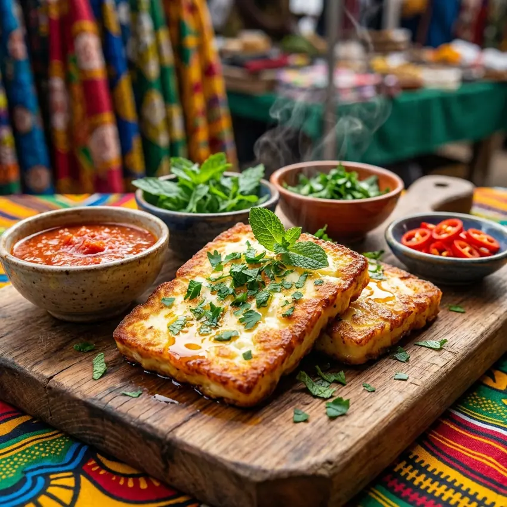

Découvrir Parakou
Préparez votre séjour et explorez les lieux incontournables.




Découvrir & S'évader
Les sites historiques, les marchés et les lieux de loisirs.

Musée de Plein Air de Parakou
Immersion exceptionnelle dans l'habitat traditionnel, l'artisanat et les coutumes ancestrales des peuples du Borgou.

Grand Marché Central Arzeké
Le poumon économique du septentrion béninois. Mille couleurs, épices locales, pagnes traditionnels et ambiance chaleureuse.

Monument Historique Bio Guerra
Statue équestre monumentale dédiée au célèbre résistant face aux conquêtes coloniales. Fierté de tout le peuple Wassangari.
Séjourner & Déguster
Les meilleures adresses pour dormir et manger à Parakou.
Hôtels & Résidences Étoilées
Profitez du confort moderne et de l'hospitalité légendaire du Borgou. Chambres climatisées, piscines et suites d'affaires.
Restaurants & Saveurs du Borgou
Dégustez le véritable fromage wagashi grillé, l'igname pilée sauce arachide ou sésame, et la savoureuse pintade braisée.
Expériences Uniques
Immersion au Marché Arzeke
Perdez-vous dans les allées colorées du grand marché. Tissus, épices, artisanat... c'est le poumon économique et social de la ville. Une expérience sensorielle inoubliable.
Lire le guideEmportez Parakou avec vous
Téléchargez l'application Explore Parakou pour naviguer hors ligne, accéder aux audioguides et découvrir la ville facilement.